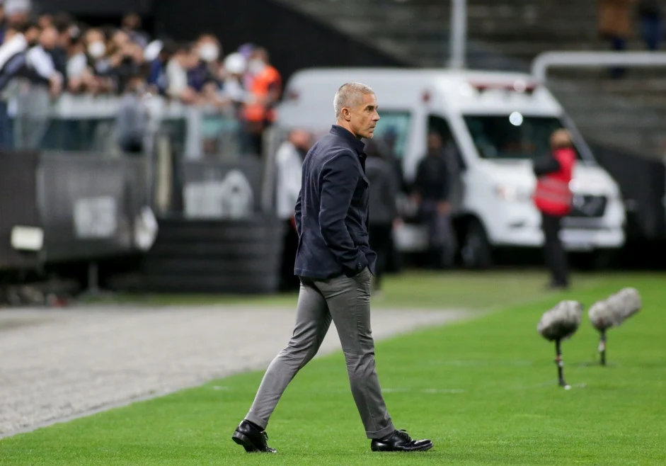

CORINTHIANS FICA A UM JOGO DE IGUALAR MAIOR SEQUÊNCIA DE PARTIDAS COM GOLS NESTA TEMPORADA
|
O Corinthians está a um jogo de igualar a maior sequência de partidas na temporada marcando ao menos um gol neste Campeonato Brasileiro. Depois do empate por 0 a 0 com o Santos, na estreia do meio-campista Giuliano pela equipe, todas as vezes em que o time foia campo, o ataque guardou ao menos um gol. |
Foram vazados Athletico, Grêmio, Juventude, Atlético-GO, América-MG, Palmeiras, Red Bull Bragantino e Bahia. Antes do início dessa sequência, os comandados de Sylvinho haviam passado cinco partidas sem conseguir sair do zero no Brasileiro. |
|
Iniciada com o 3 a 1 sobre o Ceará, a série de duelos contou com cinco vitórias e quatro empates, sempre com algum corinthiano balançando as redes durante os 90 minutos de bola rolando. O próximo duelo é neste sábado, contra o Sport, fora de casa. |
A única vez em que o clube do Parque São Jorge conseguiu marcar gols consecutivamente em mais partidas nessa temporada foi logo na abertura. Depois de empatar sem gols com o Red Bull Bragantino, na estreia do Paulista, o time fez gols nos dez jogos subsequentes. |